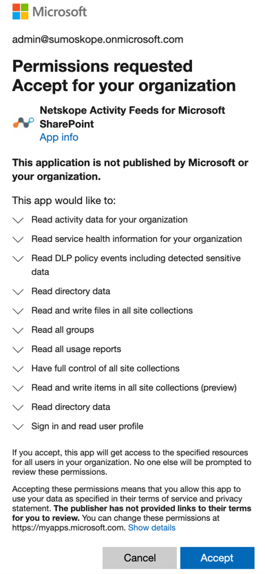

Microsoft Office 365 and Netskope API Data Protection Frequently Asked Questions
Which family of APIs Netskope leverages for Microsoft Office 365 SharePoint?
A: Microsoft Office 365 SharePoint uses the following APIs:
SharePoint API (legacy)
Microsoft Graph API (new)
Office 365 Management API
Why does Netskope use a SharePoint plugin and an Azure web app (service principal)?
A: The plug-in is used to register/receive notifications and for policy enforcement when using the (old) SharePoint APIs, while the Azure web app is the equivalent for the (new) Graph APIs. SharePoint APIs are still a fallback mechanism in case Graph API doesn't provide all that Netskope requires. As of today, you still have both APIs, however in the near future, when Netskope decommissions the SharePoint APIs, you do not have to install the SharePoint plug-in, and Netskope will leverage the service principal app that is automatically installed in Azure at the time of grant.
Note
Microsoft Outlook utilizes the Graph API only, and that is why it uses the Azure web app (service principal) for Microsoft Exchange online, and not the SharePoint plug-in.
What are the app entitlements for SharePoint plugin and Azure web app?
A:
For SharePoint plugin:

For Azure web app:

Why does Netskope require global admin credentials?
A: The way permissions work in Azure/Office 365 is that Netskope requires an administrator to grant enough privileges for Netskope to perform specific actions. Note that the Netskope app does not receive global admin permissions. It only receives permissions for the scope Netskope requests for (listed below at the time of grant):
In particular, the global admin is the only user that can delegate access for application-level permission (as opposed to user level permissions). You can find additional Microsoft documentation on how all these work here. Furthermore, global admin credential is required for Graph and Office 365 Management APIs. Post-grant, Netskope is independent of the granting account for policy processing.